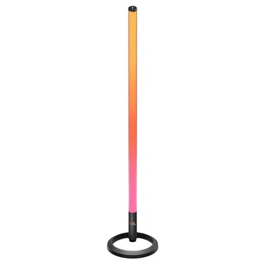

Inicio › Otros de tecnología y hogar

Precio en cada tienda
| Tienda | Precio | Antes | Disponibilidad | |
|---|---|---|---|---|
| Walmart | L 465 | — | Disponible | Ver en tienda › |
Precios referenciales tomados de cada tienda el 28 de noviembre de 2026. El precio válido es el que muestra la tienda al comprar.
Historial de precio
Lo seguimos desde el 13 de noviembre. Precio más bajo registrado: L 465 en Walmart (13 de noviembre), igual que hoy. El precio no ha cambiado en ese tiempo.
Características
| Color | Negro |
|---|---|
| Dispositivos compatibles | Smartphones, tablets, computadoras con USB-C |
| Estilo de auriculares | In-ear |
| Marca | JBL |
| Medida de peso | 20 g aproximadamente |
| Modelo o serie del producto | JBLTUNE310C |
| País de Origen - Ensamblaje | China |
| Tecnología de micrófono | Integrado |
| Tiene conexión inalámbrica | No |
| Tipo de conector | USB-C |
| Fabricante | JBL |
Descripción
Los Audífonos JBL Tune 310C USB-C ofrecen conexión directa digital con sonido claro y equilibrado. Integran conector USB-C, diseño intrauditivo cómodo y cable resistente para uso diario. Su audio definido con graves profundos mejora música y llamadas. Ideales para dispositivos compatibles sin necesidad de carga adicional.
Otros otros de tecnología y hogar JBL
 Audifono Con Cable Jbl Tune 310c NgL 465En Walmart
Audifono Con Cable Jbl Tune 310c NgL 465En Walmart Batería Recargable de Li-ion JBL 2000 mAh a 5000 mAh 200Partybox AccL 1,297En 2 tiendas · más barato en RadioShack
Batería Recargable de Li-ion JBL 2000 mAh a 5000 mAh 200Partybox AccL 1,297En 2 tiendas · más barato en RadioShack
Barra de Luz JBL PartyStick RGB con Bluetooth 5.3 y 8h de autonomíaL 3,995En Lady Lee Proyector de Luz JBL Partylight BeamL 4,495.01En Lady Lee
Proyector de Luz JBL Partylight BeamL 4,495.01En Lady Lee Speaker Jbl Partybox 520 400wL 23,325En Walmart
Speaker Jbl Partybox 520 400wL 23,325En Walmart